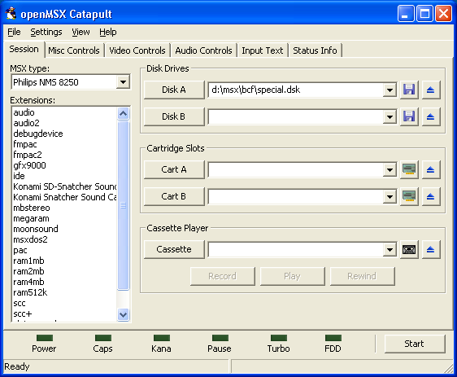
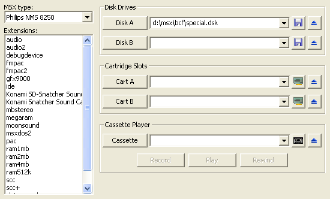
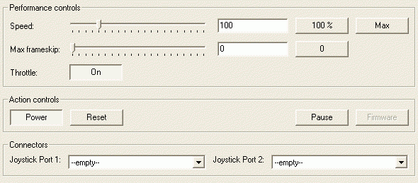
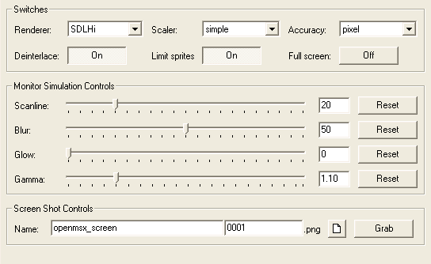
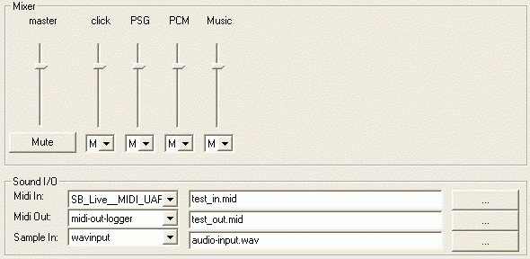
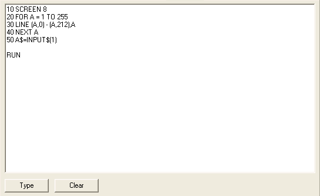
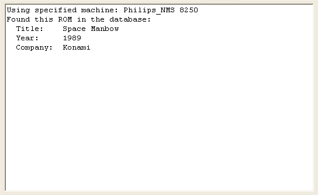

The latest version of the openMSX Catapult manual can be found on the openMSX home page:
http://openmsx.org/catapult-manual/
The latest version of the openMSX manual can also be found there:
You can also use these URLs to get up-to-date versions of the hyper links if you printed out this manual.
This manual is about Catapult, the (optional) GUI for openMSX. You can find more information about openMSX on the openMSX home page. You can also download Catapult and the emulator itself from there.
openMSX is in alpha state, which means that some things work but not all features are implemented yet. Many emulation features are implemented, but in terms of user interface it is rather bare bones. However, since the emulation is already pretty good, it would be nice if non-insiders would be able to play with it, too. To allow people to use openMSX without having to find all options the hard way, Catapult was created. Like openMSX, Catapult is still in development and doesn't support all features we would like it to, but still it has become a great addition to openMSX. This manual assumes that openMSX has already been set up. For further details how to setup and use openMSX please refer to the openMSX manuals .
Although Catapult was designed to be self explanatory, we still decided to create a comprehensive manual to familiarise people with the various pages and controls.
Disclaimer: We do not claim this guide is complete or even correct. What you do with the information in it is entirely at your own risk. We just hope it helps you enjoy Catapult (and with that openMSX) more.
The following people contributed to this document in one way or another:
Thanks to all of them!
This section gives an overview of the changes that were made to this document. It doesn't contain every single modification (use the CVS log for that), only the big picture.
On a Unix-like system, if you use a recent KDE or GNOME, you can find Catapult in the menu, under Emulators or under Games. If this does not work for you, you can start Catapult from the command line by simply typing:
Windows users can simply double-click on the Catapult icon in the start menu if they have chosen to create it during setup. If not, simply find the executable and start it anyway you like.
When you start Catapult for the first time it will ask where it can find openMSX. To make it as easy as possible, Catapult first checks the default locations for openMSX to see if the executable is there. If it is, you only need to press the OK button. If it is not on the default location, you will need to locate it yourself.
At the bottom you can uncheck the check box if you don't want to run the hardware configuration test. We recommend to leave this on though: it will check which MSX systems will work with openMSX and which will not. The ones that are not working are probably missing some system ROMs. See the openMSX Setup Guide on how to deal with that. By default, the list of extensions and MSX machines that can be emulated, will only show hardware that is found to be working. You can change that in the View menu. After having installed more ROMs, you can always run the test again via the "File - Test MSX Hardware" menu option.
After you press the OK button, Catapult's main screen appears, as shown in the picture below.

The main screen of Catapult consists of 6 pages to separate different kinds of functionality. This creates a much clearer interface than trying to put everything on one page. This Section introduces the different pages and how they can be used. It also tells about the global section of Catapult.
The next chapters discuss Catapult's functionality in detail. You will find links in this chapter to those detailed explanations.
This page lets you select which MSX machine you want to use, what extra functionality that machine should have and what kind of media (disks, cartridges, cassettes and hard drive images) you insert. This is the most used page of Catapult. [details]
The Miscellaneous Control Page ("Misc Controls") contains the controls that can't easily be put in one category. This page contains three types of controls:
[details]
This page contains all controls to select how openMSX should display the MSX screen. Some of this controls can cause openMSX to slow down. This page also contains some controls to let openMSX make screen shots. [details]
When Catapult starts, this page looks completely empty, but once openMSX is started, this page contains a mixer of each sound device available in the MSX. This page also contains some controls concerning MIDI and PCM wave input. These are only enabled when MIDI ports are available in the currently emulated machine and/or extensions or when the Panasonic FS-A1GT MSXturboR is being emulated, respectively. [details]
This page can be used to 'type' text in openMSX. Any text typed or copied into the text field can be typed into the emulated MSX including newlines. [input]
This page contains the messages Catapult gets from openMSX. This can be informational messages like where the screen shot has been saved, but it can also show warnings or errors that occur. In case of an error, Catapult automatically selects this page. [status]
The global section can be found in the bottom of the Catapult screen. It contains the Start/Stop button to start or stop openMSX. It also contains a representation of the LEDs of the MSX. Not all MSX machines have these LEDs, so don't be alarmed if some LEDs don't appear to be working. At the bottom of this section, you can find the status bar. It displays information about whether or not openMSX is running and the number of frames openMSX displayed per second (fps).
Below, you can see a screen shot of the Session Page. The left side is used to select the hardware of the MSX and the right side specifies which software should be inserted into the MSX. Screen shots in this manual were taken in Windows XP, Windows 7 and Windows 10. So, we're mixing systems here... in general, controls might look a little different but should still be easily recognisable.

In the top-left corner, you can select which machine openMSX should emulate. The fact that a machine is listed, doesn't mean that it actually runs. If a machine needs system ROM images and they are not available, that particular machine just won't run. Catapult won't detect this lack of ROMs. You will see the error message showing up in the Status Page. However, you can let Catapult run a test on all found hardware configurations via the "File - Test MSX Hardware" menu option. After testing, only working configurations will be shown, unless you change this in the "View - Display Broken Configurations" menu option.
More about machines and how to set them up in the openMSX manual.
Below that, you can select one or more extensions. Extensions are simply MSX cartridges (extensions to the MSX system) that you can plug into the emulated MSX. This can be e.g. sound chips, memory mappers or drive controllers. You can select as many extensions as you would like in Catapult, but openMSX might make a problem. Some problems that can occur are:
Note that with Catapult it is not possible to select one extension multiple times. We don't expect this to be a problem, however.
More about extensions in the openMSX manual.
The rest of this page is used for inserting media into your MSX. There are three types of media you can use:
Every media input box is equipped with a history. Just click on the down arrow to open the history. This way you can easily select the most recently used files. Catapult remembers the last 25 items of each media field.
The button groups on the far right are to insert or remove the various types of media. The buttons on the left of these groups present a file selection window, in which you can select which media file should be used. The buttons on the right are to eject media. No conformation is asked for this.
The buttons left of the media field can be used to show a pop-up menu with some extra options. Options shown in these pop-ups are:
Catapult uses two different kinds of updating schemes. When openMSX is not running and you change some of the media input boxes, nothing really happens until you actually start openMSX. At that moment, the used values are added to the history and the history is saved. Of course, these values are then used in openMSX. If openMSX is already running and you change a disk or tape, this will be updated according to the following criteria:
In both cases, the history is updated.
Again, do note that updating cartridges while extensions are inserted, will mean that the extension in that slot will be removed and Catapult will not show this in the user interface!
This section explains what you can do to control many aspects of openMSX. Catapult is using the so-called CliComm interface. This interface allows you to send messages to openMSX to change a number of settings and parameters. openMSX, in its turn, can also send messages to Catapult telling if any setting or parameter has been changed and if requested commands have been processed without problems.
Below you see a picture of the Miscellaneous Control Page while openMSX is running. If openMSX is not running, most controls will be disabled. (You can still set up what's in the joystick ports.)

The top section of this page consists of a number of controls with which you can influence the speed and frame skip setting of openMSX. The upper row controls the speed percentage of openMSX. You can use the slider to select a speed between 1 and 500%. You can also directly input the speed into the input box. Finally, the buttons on the right are to set the speed to respectively 100% and the maximum. If the Max Speed Button is used, all limits are removed. Very useful to fast forward demos or loading screens. If the selected speed is higher than your PC can manage, openMSX will try to go as fast as possible. The next rows selects how many frames may be maximally skipped to maintain the chosen speed and how many frames are minimally skipped.
In the centre of this page, you can find the so-called action controls. These control the behaviour of the MSX directly. The power control can turn the MSX on or off. When Catapult starts openMSX, the power is always on. The Reset button resets the MSX. The Pause button pauses the emulation completely. Finally, the firmware button lets you choose whether or not you want to enable the firmware in the MSX you are emulating (if available).
The bottom of the page allows you to hook devices to the MSX connectors.
For each joystick port, you can choose between a mouse, keyjoysticks, the Arkanoid pad, a track ball, a touch pad, some dongles and any joysticks hooked up to the PC. If you select the same device for both ports, you get a warning and a request for confirmation. This allows you to choose which port the selected device should be in. These are the only controls that can be modified before openMSX is started. You can also adjust the Ren Sha Turbo speed (joystick auto fire) if the current MSX supports it (MSXturboR, for instance).
You can hook a Printer logger or SIMPL in the printer port. When you choose the Printer logger, you can also choose which file to use for the log by either typing it directly or browsing for it. If you plug SIMPL (a very simple Digital to Analog Converter) into the printer port, openMSX supports it as an extra audio device. You can also see a slider for it appearing it the Audio Controls page.
Below you see a picture of the Video Control Page while openMSX is running. If openMSX is not running, most controls will be disabled.

In the top-left corner, you can select which renderer is used by openMSX.
With the top-centre controls you can select which scaler should be used. You can select both the scaling factor and the scaling algorithm. Scalers determine how the picture is scaled to higher resolutions than 320×240 (if you use a factor greater than 1). Beware that some scalers can be really slow. The algorithms are sometimes quite complex.
The Accuracy control lets you select the accuracy level openMSX uses to draw the screen.
See for an explanation of renderers, scalers and accuracy the openMSX User's Manual.
The Video Source control selects which video source is visible on the openMSX window. Usually it's just "MSX", but in some cases you might want to show the GFX9000 for instance (or Video9000, which has some features to superimpose the MSX image over the GFX9000 image). More info in the openMSX User's Manual.
The Deinterlace button toggles the deinterlacing effect on or off. When a real MSX is in interlace mode, you can see the screen flashing. When deinterlace is off you get that same effect on openMSX. If this toggle is switched on, the picture holds perfectly still.
The Limit sprites button allows you to let openMSX draw as many sprites on a horizontal line as necessary. With the sprite limit switched off, some games will stop flashing their sprites. This feature is on by default since that's closest to a real MSX. Some programs rely on the sprite flicker effect and may thus look bad if you turn this off.
The Full screen button switches openMSX to full screen mode. The first time you do this, there will be a warning how to get back. You can disable this warning if you want to. Windows users can also get back to windowed mode by switching back to Catapult (using ALT-TAB) and simply deselecting full screen again.
The Disable sprites button allows you to disable sprites in order to create screenshots of games without sprites, useful for making maps.
The centre part of this page allows you to modify the openMSX screen. All of these settings can be controlled by using the slider, typing the value directly into the edit field or using the reset button to revert to the default state. These settings are pretty much self-explanatory, or otherwise explained in the openMSX User's Manual. Glow is only supported in the SDLGL-PP renderer.
The bottom line of the page can be used to create screen shots from openMSX. As
soon as a filename is available in the first box, the second box will show a
counter. This counter is
based on the number of files that already exist. So if test is
typed and test0001, test0002 and
test0003 exists, then the counter will show 0004. The
browse button can also be used to set a filename, however the counter part will
recalculated. So even if you browse and try to open test0002 the
result will still be test0004. You can also override the counter
by just typing another number, but as soon as you change the name again, the
counter will be recalculated. Normally, there is no reason to override the
counter.
Finally, pressing the Grab button takes the screen shot. If the filename and counter fields are empty, openMSX will take a screen shot with the default settings. The first time, there will be a message that the shot has been taken and that the location is shown in the Status Page, since no further changes are noticeable. You can disable this message when it pops up. So, again, the location of the screen shot taken will be shown in the Status Page.
Below you see a picture of the audio control page while openMSX is running. If openMSX is not running, the controls will be disabled and instead of the mixer a simple message will be displayed stating: "No audio channel data available".

The top half of this page is used to adjust the volume and channel mode of the sound devices present in openMSX. When a slider is all the way up, volume is set to maximum and if it's all the way down that specific device is muted. The mode selector below each slider lets you choose between L(eft), R(ight), M(ono) and (O)ff. However, some sound devices only support S(tereo) (and Off, of course).
The bottom part of this page can be used to select where the sound I/O devices
are redirected to. The top of this section lets you choose what is plugged into the
MIDI-IN port. You can at least choose between --empty-- and
midi-in-reader. Windows users also have the choice to use one of
the native MIDI devices. The field besides the selector is only used when
midi-in-reader is selected. In this case, this allows you to select
from which file the MIDI input is taken.
The second row of controls is to select what is plugged into the MIDI-OUT port.
Possibilities are --empty-- and midi-out-logger.
Windows users can, again, also select native MIDI devices. The field right of
it allows you to select in which file the MIDI output is stored in case
midi-out-logger is chosen. In UNIX systems you might want to
choose /dev/midi to route the MIDI data to a MIDI device you have
connected to your system.
MIDI-IN and MIDI-OUT are only available when you're emulating a machine or extension with MIDI ports. If there are multiple MIDI ports available, only one can be controlled with Catapult.
Finally, the last row is to select the PCM wave input, which is only
available on the MSXturboR GT. You can choose --empty--
or wavinput. In case of wavinput, the field besides
it selects from which file the PCM input is taken.
Below, there's a picture of the Input Text page.

This page contains only three controls. The big text field can be used to type
or paste any text you want typed out in the emulated MSX. All characters typed
in this field will be typed in the MSX, so it could take a while when there's a
large text.
Any newlines within this field will result in an enter in the MSX.
The text is transmitted to the MSX as soon as the type button is used. The text
will not be automatically cleared, so the same text can be used multiple times.
Finally, the clear button clears the text, so you can start over. A final note:
this feature may not work entirely correctly for Japanese and not at all for
Korean characters.
The status display of Catapult consists of four different elements:
The Status Page displays all messages given by openMSX. This includes
informational messages, but also warnings and errors and output from the debug
device (see the
openMSX
User's Manual for more information) if it is configured to output to
stderr. Informational texts are displayed in black, warnings are
displayed in dark red while errors can be recognised by their bright red
colour. This display is cleared whenever openMSX is started.

The LED status display in the Global Section shows the status of the MSX LEDs at any given time. Which LEDs are used depends on the type of MSX computer openMSX is emulating.
The final part of the Global Section is the status bar, at the bottom of the Catapult window.
On the left side of the status bar you can see whether or not the emulator is running. This can be convenient if you have multiple Catapults in use. It will also tell you if openMSX is paused.
Finally, on the right side of the status bar, you'll find the frame rate display, which shows you how many frames openMSX is displaying per second. When the emulator runs at 100% speed, this should be 50 or 60 fps (depending on the current display frequency of the MSX). When you increase the speed of openMSX, the fps count should also be increased. Bear in mind that when using SDLGL-PP (OpenGL), your video driver may force the fps to your monitor refresh rate to avoid disturbance while drawing. Also, if this display shows a frame rate below 50 fps, your computer is actually a bit to slow to generate all frames in time with the current settings and thus frames are being skipped.
Although most of the Catapult action is done using the various pages mentioned above, there are a few options only available through the pull down menu. These options are described briefly in this section.
share/settings.xml).
Feedback and bug reports are always most welcome!
There are several options:
#openMSX on irc.freenode.net
and ask your question there. Also reachable via webchat! If you don't get a reply immediately, please stick around for a while, or use one of the other contact options. The majority of the developers lives in time zone GMT+1. You may get no response if you contact them in the middle of the night...
openmsx-user mailing list.
If you want to address the openMSX developers directly,
post a message to the openmsx-devel mailing list.
More info on the
openMSX mailing lists,
including an archive of old messages, can be found at SourceForge.
In any case, try to give as much information as possible when you describe your bug or request.